Dashboard Overview
The ABInBev dashboard provides a comprehensive view of all POC visits, sales, orders, stock availability, pricing, and merchandiser activity. Access it at https://kaeyros4abbev-dashboard.kaeyros.org/dashboard.
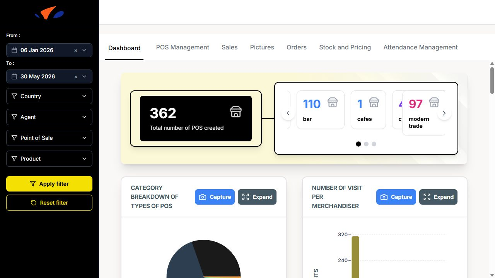
The dashboard is organised into several tabs: Dashboard, POS Management, Sales, Pictures, Orders, Stock and Pricing, and Attendance Management. A filter sidebar is available on the left side of each dashboard page.
Filters
The dashboard uses a filter panel on the left side of the screen. The same filter panel is available across the dashboard pages.
The available filters are:
From: start date of the reporting period.
To: end date of the reporting period.
Country: filter the dashboard by market.
Agent: filter by merchandiser.
Point of Sale: filter by a specific POS.
Product: filter by SKU or product.
Click Apply filter to refresh the dashboard with the selected values. Click Reset filter to clear all selected filters and return to the default view.
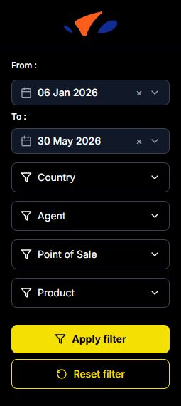
Dashboard Tab
The main dashboard displays key metrics:
Total number of POS created
Category breakdown of types of POS (bar, modern trade, hotel, restaurant, traditional trade, tavern, and other POS categories)
Number of visit per merchandiser (bar chart)
POS Evolution Chart (line chart showing POS creation over time)
POS created per Merchandiser (searchable table with Rank, Merchandiser, and Number of PDVs created)
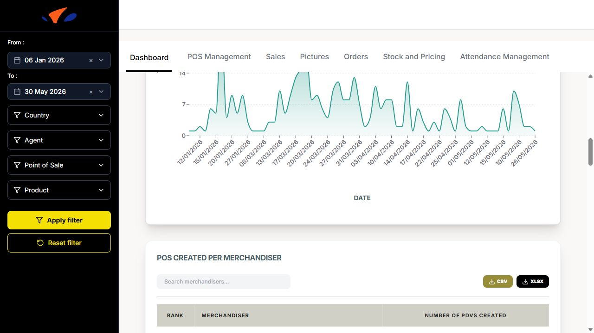
POS Channels Distribution (pie chart: On Trade vs Off Trade)
List of merchandisers & number of POSs created (bar chart)
Average number of competitor product per week and per country
Activity by Person (line chart showing visits over days for each merchandiser)
POC Management
This section allows you to manage and view all points of sale. You can switch between Table view and Map view.
Table view: Lists all POCs with columns: POS Name, POS Owner, POS Channel, POS Type, Location, Geolocation, Heineken Available, Heineken unit price, and Created on. You can search using the Rechercher search bar.
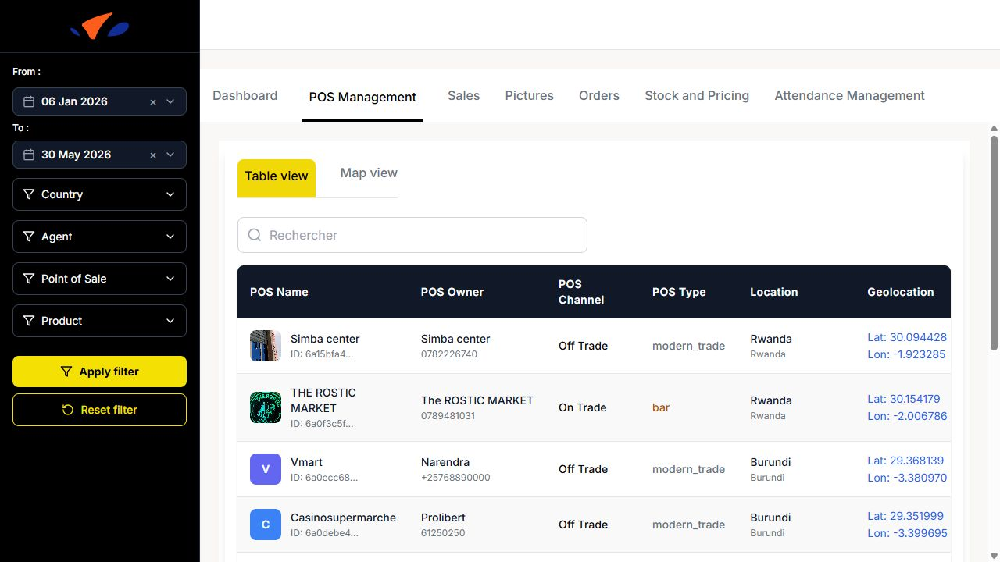
Map view: Displays POC locations on a map.

Sales
The Sales tab shows sales performance:
Total sales (sales amount from all visits)
Total Quantities (total quantity sold during visits)
Sales per product (bar chart showing total sales amount for each product)
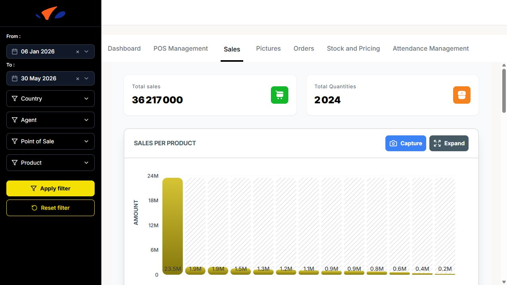
Sales per POS (bar chart showing total sales amount for each point of sale)
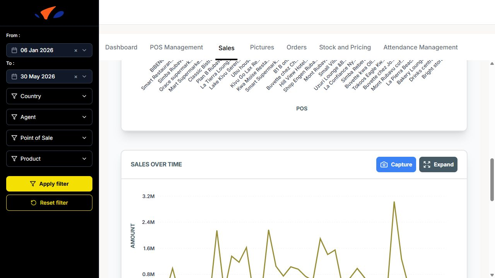
Sales over time (line chart showing daily sales amount)
Sales per Month (monthly sales trend)
Pictures
This section displays photo cards for points of sale. Each card shows the POS image, channel (On Trade or Off Trade), country, initials, and POS name.
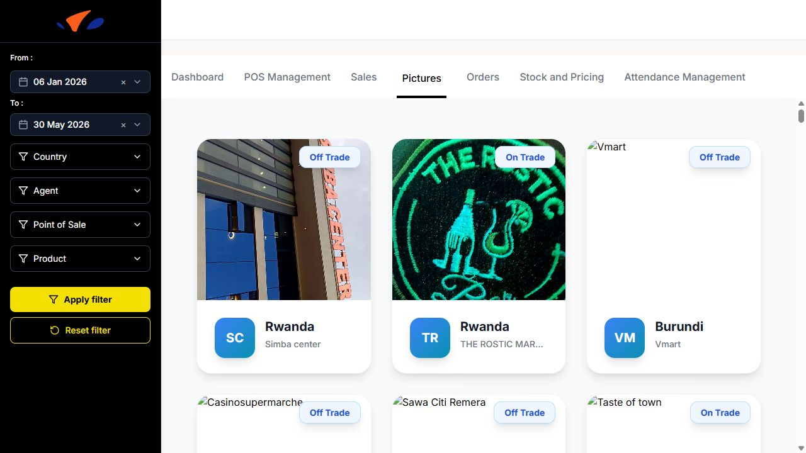
Orders
The Orders tab tracks orders and quantities submitted during visits. It is available at https://kaeyros4abbev-dashboard.kaeyros.org/dashboard/orders.
The top of the tab displays:
Number of Orders
Average Orders per Day
Total Quantities Ordered
The tab includes the following charts:
Number of Orders / Agent
Number of Orders / SKU
Daily orders evolution, with Day, Week, and Month views
Quantities / Agent
Quantities / SKU
Number of Rejections / Agent
Number of Rejections / Reason
The bottom table includes a Search … field, CSV export, XLSX export, and Columns selector. If no rows match the current filters, the dashboard displays No data available and suggests checking back later or resetting filters.
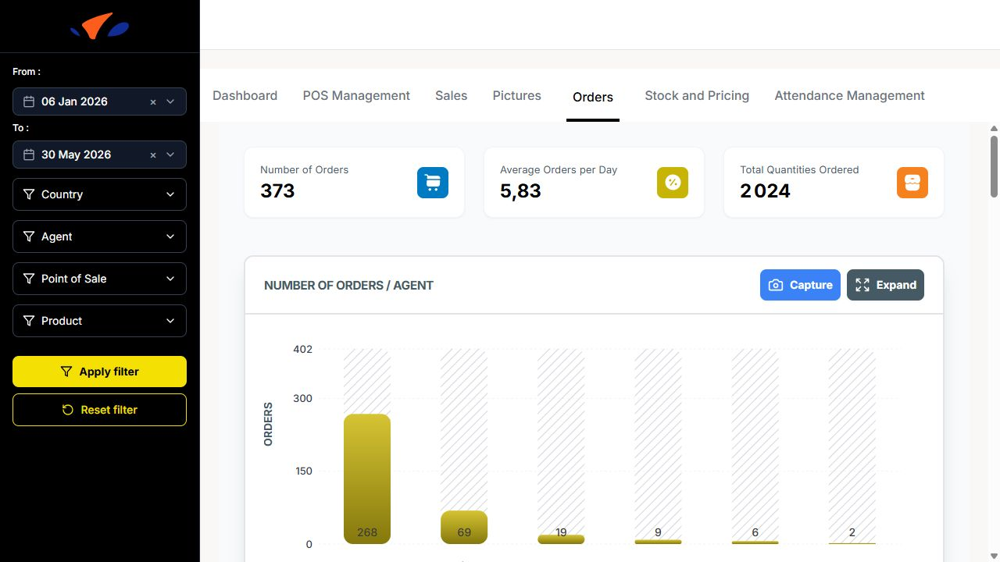
Stock and Pricing
The Stock and Pricing tab tracks product availability, out-of-stock situations, POS alerts, and product price evolution. It is available at https://kaeyros4abbev-dashboard.kaeyros.org/dashboard/stocks-pricing.
Use the filters on the left side of the dashboard to refine the analysis by:
From / To date range
Country
Agent
Point of Sale
Product
Click Apply filter to update the charts. Click Reset filter to clear the selected filters.
The top of the tab displays three key indicators:
Availability Rate (Numeric Distribution): percentage of product observations marked as available.
Out-of-Stock Rate (OOS Rate): percentage of product observations marked as out of stock.
Points of Sale on Alert: number of POS with stock availability issues.
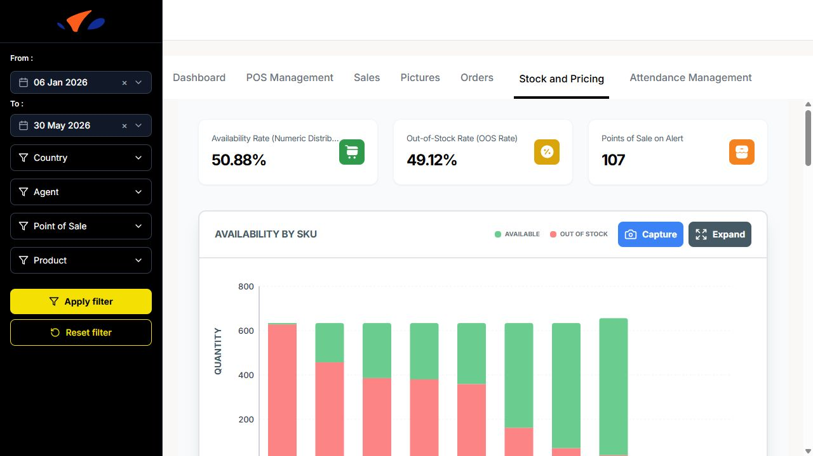
The Availability by SKU chart compares available quantity and out-of-stock quantity for each product. It helps identify which SKUs are most frequently unavailable.
The Out of Stock per POS chart ranks points of sale by the number of out-of-stock products. Use it to quickly identify POS that need follow-up.
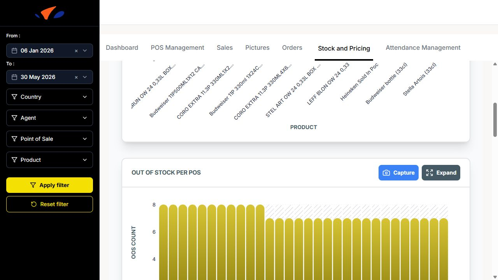
The Average Prices Evolution chart shows how average product prices evolve over time. The view can be switched between Day, Week, and Month.
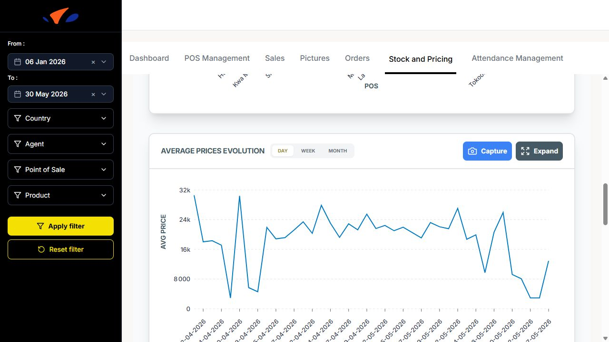
The Prices evolution of products chart compares price changes across selected products. The chart can display multiple products at the same time, making it easier to spot product-level price differences.
The Out of Stock vs Sales Correlation chart compares OOS count and sales volume over time. Use it to understand whether stock issues are affecting sales activity.
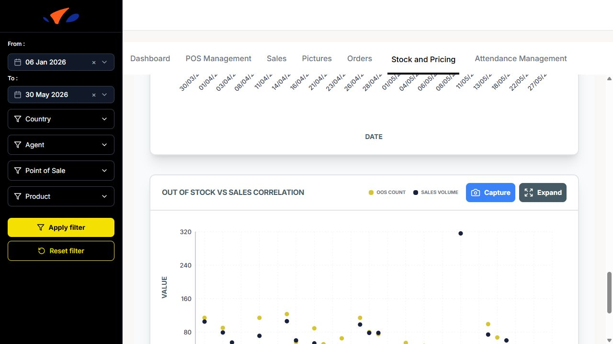
Attendance Management
Monitor merchandiser attendance and work time:
Attendance summary: number of present/absent merchandisers.
Summary of working time per user: table with worktime categories such as < 1 hour, 1 to 2 hours, 2 to 3 hours, 3 to 4 hours, 4 to 5 hours, and > 5 hours.
Daily attendance summary: chart showing attendance status for each day.
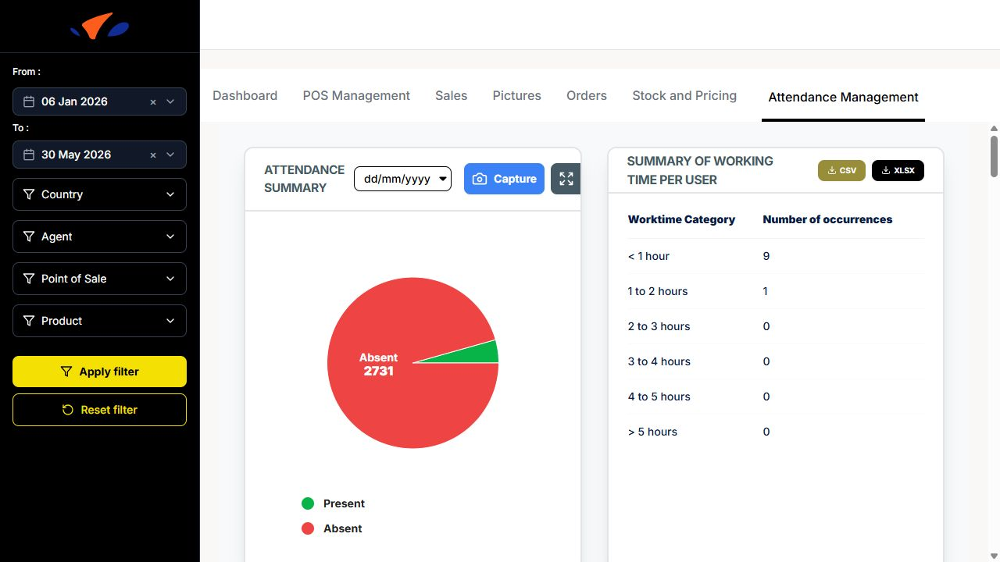
Attendance Tracking per Merchandisers: chart grouped by time category.
Distribution of visits by time slots: chart using Early morning: 06:00 to 10:00, Late morning: 10:00 to 14:00, and Afternoon: 14:00 to 18:00.

Distribution of visits per day
Average number of visits per week and per agent

Distribution of visits per month
Working time Report: searchable table with Agent, Date, Country, Start Time, End Time, Total Work Time, and Work Time Rate. The table supports CSV, XLSX, and Columns controls.
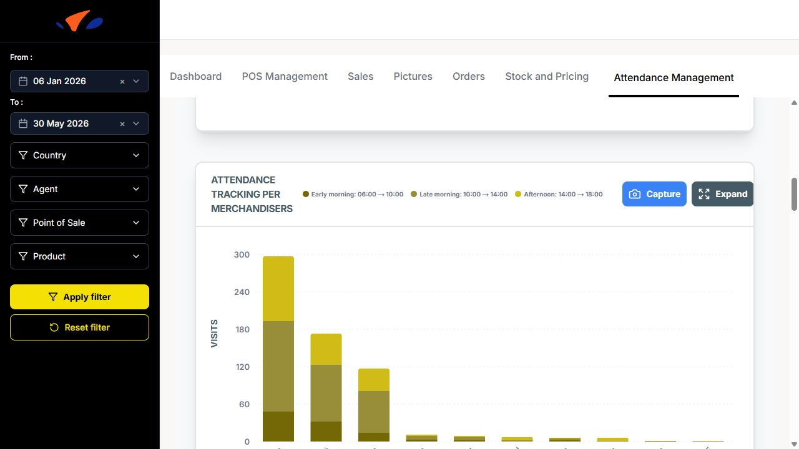
Export and Capture
Many sections have Capture and Expand buttons to take screenshots or enlarge charts for better viewing.